Five pieces, open all day, for work and everything else.
Voice first: Typeless
I dictate almost everything. If I don't have to type, I don't. It's about four times faster than my keyboard, and my thinking stops waiting for my fingers.
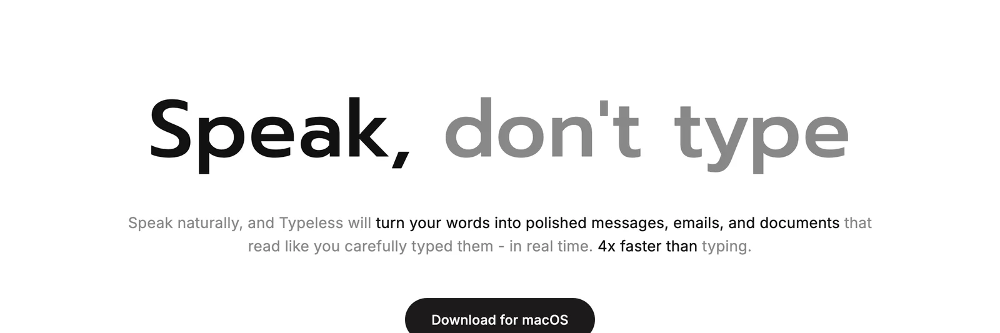
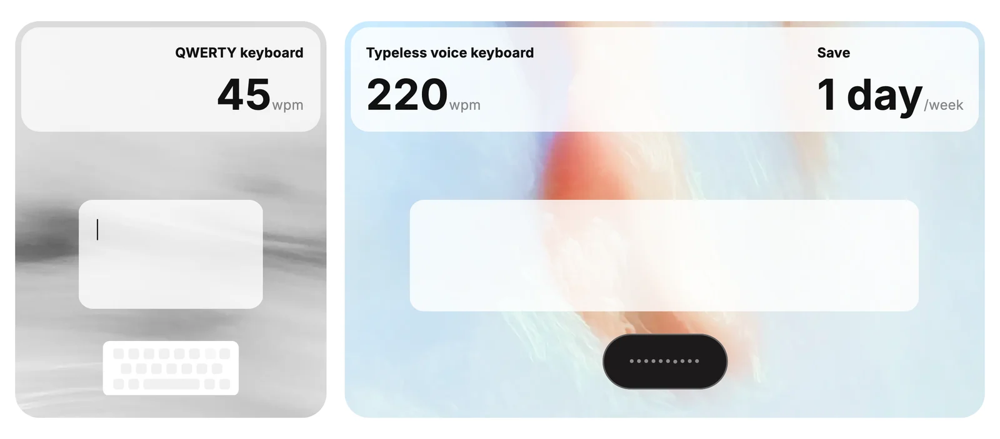
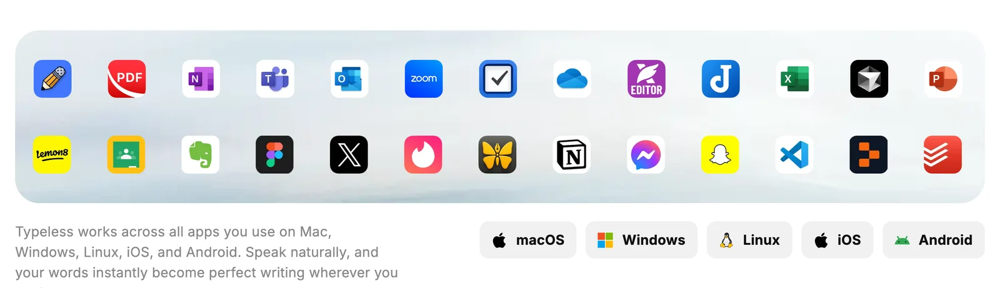
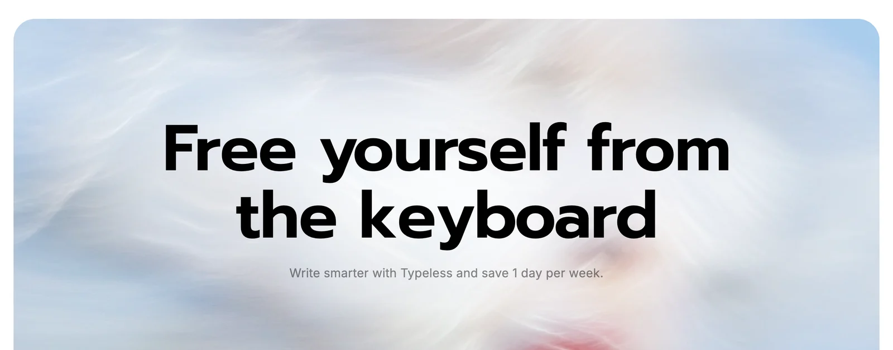
Speak, don't type.
Many agents at once: cmux + Claude Code
One window, a column of Claude Code sessions on the left, each on its own task. Voice in, several agents out.
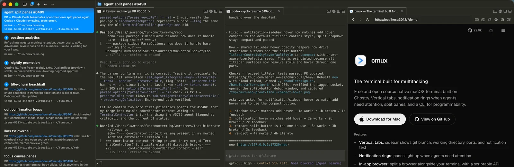
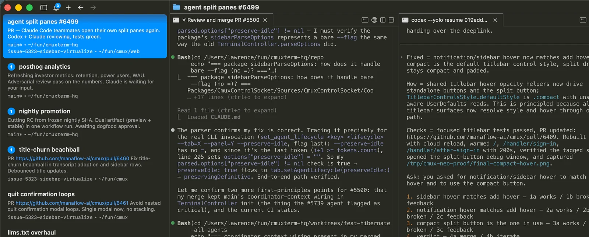
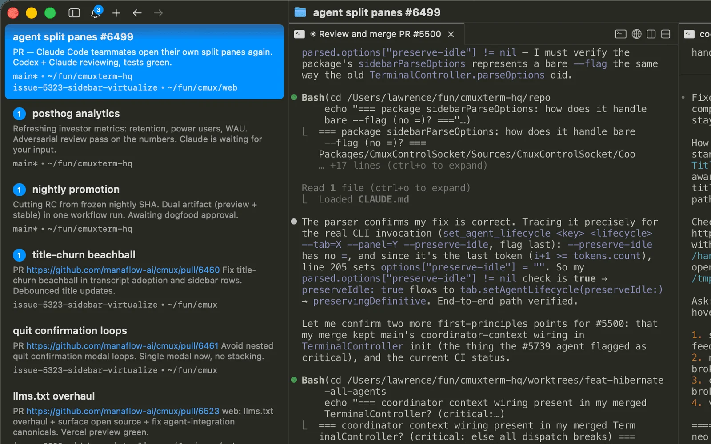
● Building How I AI
Read src/data/cases/howIAI.ts
Edit 3 files
✓ Screenshot saved
Check in from the notch: Vibe Island
With several agents running, I don't watch any of them. Vibe Island turns the MacBook notch into a Dynamic Island for agents: who's done, who's waiting for approval. I approve from there or jump straight to that terminal. ==I just come by to harvest.==
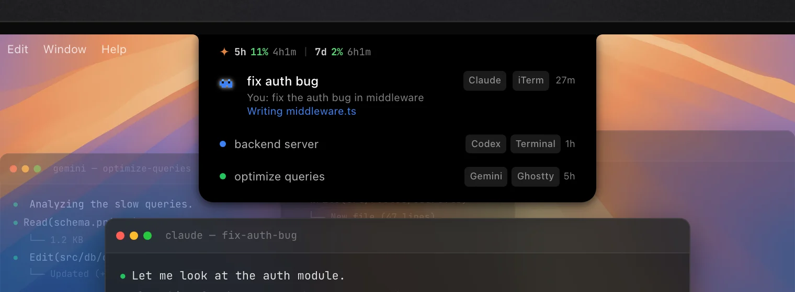
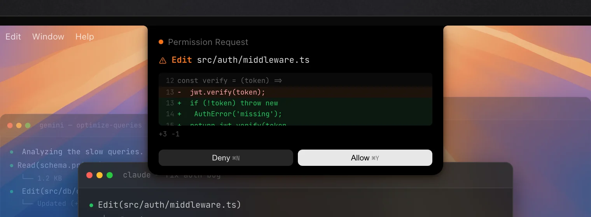
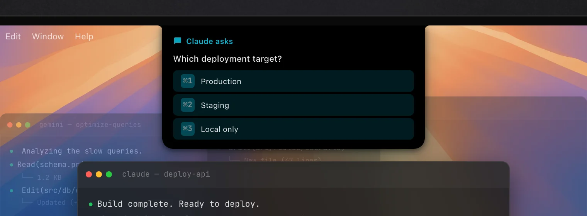
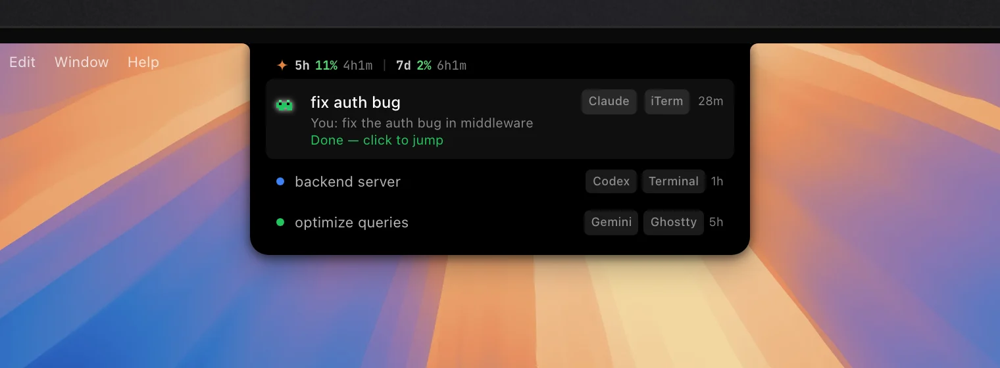
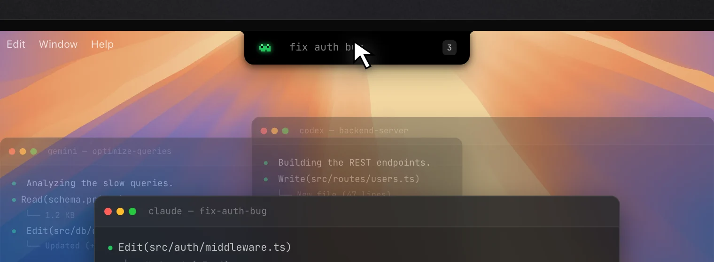
A second brain: Obsidian + Claude + GitHub
Notes, plans and a 50,000-word personal wiki live in Obsidian, readable by Claude and backed up to GitHub.
Not just work
Fitness, a new subject, a trip, a tax form: if I'm learning something, an AI is teaching me. It's the OS for my life, not a tool for my job.
Three things I keep coming back to.
Be a kid about it
Kids don't know what's impossible, so they try everything. Models keep getting better, so I try to hand AI even the things I'm sure it can't do yet.
Every side project in this folder started as a test of what a model could do. ==None of them were supposed to become projects.==
The bottleneck is my attention
I usually have three or four agents running at once, each on a different feature, and come back later to review what they've made. The slow part is no longer building. It's me reading.
So I ask for work the way a decision-maker would: product calls, research and anything I need to review arrive as a visual page or an artifact, not a wall of text. ==When execution gets cheap, presentation has to get better.==
AI sets the floor; care sets the ceiling
AI can hand you a 50 or 60 out of 100 in minutes, and as models improve, that first pass will land closer to 60 or 70. The rest still comes from a person with taste, iterating again and again.
The ceiling is set by the quality of your iterations, your patience, and whether you ==care about the thing you're building==.